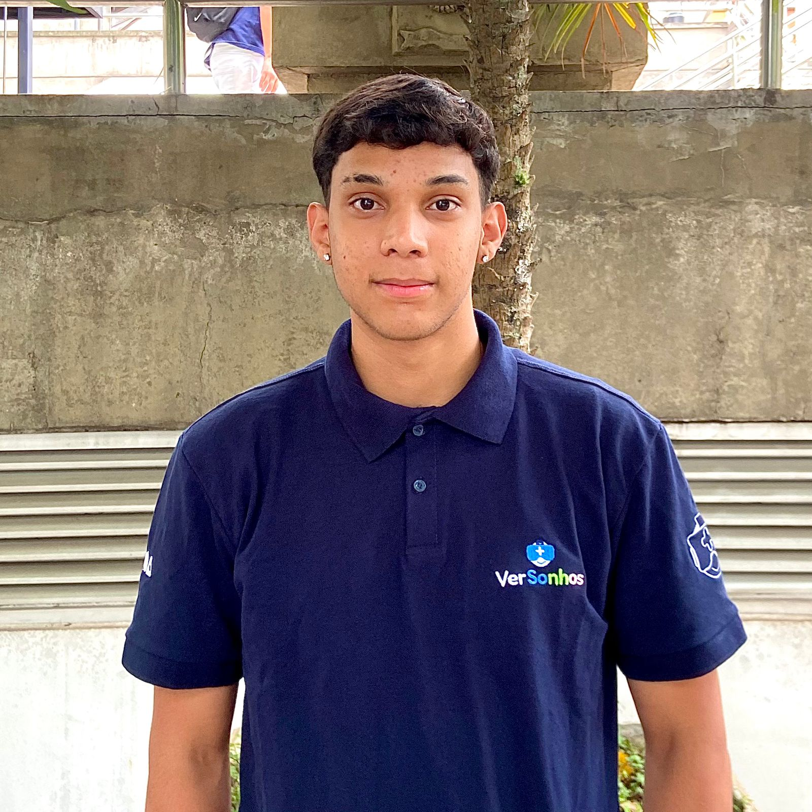

JOÃO PEDRO QUEIROZ DE MELOSolteiro(a) - 21 Anos - Brasil CEP: 05359-010, São Paulo - SP Telefone: (11) 99381-9661 Email: joaopedroqdemelo@gmail.com LinkedIn: linkedin.com/in/joaopedroqdemelo/ Portfólio: github.com/JotaPQueiroz |
 |
Sempre fui fascinado por games e ficção científica, e foi essa curiosidade de entender como a tecnologia resolve desafios complexos que me levou ao curso de Desenvolvimento Digital na Fatec Carapicuíba. Recentemente, transformei essa paixão em impacto real com o projeto VerSonhos no Instituto PROA, onde usei a Realidade Virtual para levar tecnologia e esperança a crianças em hospitais. Agora, quero aplicar essa bagagem técnica e minha vontade de colocar ideias em prática.
Graduação - Tecnólogo em Jogos Digitais. FATEC Carapicuíba, Formado em Dezembro de 2025. Período: Manhã (Disponibilidade integral).
Graduação - Análise e Desenvolvimento de Sistemas. Universidade Presbiteriana Mackenzie, 01/08/2026 - 31/12/2028.
PROPROFISSÃO (2025) - Instituto PROA / SENAC
ZION Escola de Entretenimento (2022 - 2024)
Projeto VerSonhos
Plataforma que utiliza VR (Realidade Virtual) para reduzir a ansiedade e promover o cuidado humanizado em ambientes hospitalares e salas de espera, integrando o mascote IA Will.